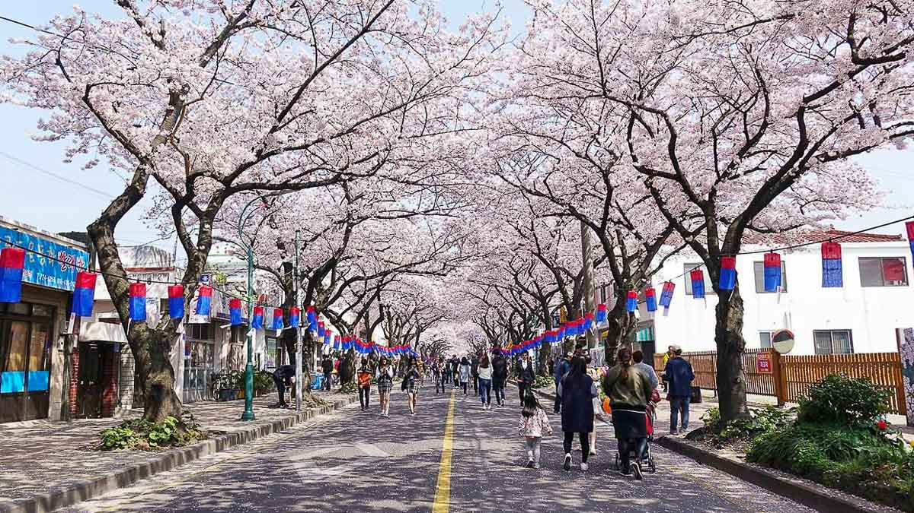

South Korea, an East Asian nation on the southern half of the Korean Peninsula, shares one of the world’s most heavily militarized borders with North Korea. It’s equally known for its green, hilly countryside dotted with cherry trees and centuries-old Buddhist temples, plus its coastal fishing villages, sub-tropical islands and high-tech cities such as Seoul, the capital.
South Korea, country in East Asia. It occupies the southern portion of the Korean peninsula. The country is bordered by the Democratic People’s Republic of Korea (North Korea) to the north, the East Sea (Sea of Japan) to the east, the East China Sea to the south, and the Yellow Sea to the west; to the southeast it is separated from the Japanese island of Tsushima by the Korea Strait. South Korea makes up about 45 percent of the peninsula’s land area. The capital is Seoul (Sŏul).
South Korea
Seoul's Namdaemun
After being destroyed by fire in 2008, Seoul's Namdaemun (“Great South Gate”) was restored and reopened in 2013.
South Korea faces North Korea across a demilitarized zone (DMZ) 2.5 miles (4 km) wide that was established by the terms of the 1953 armistice that ended fighting in the Korean War (1950–53). The DMZ, which runs for about 150 miles (240 km), constitutes the 1953 military cease-fire line and roughly follows latitude 38° N (the 38th parallel) from the mouth of the Han River on the west coast of the Korean peninsula to a little south of the North Korean town of Kosŏng on the east coast.
Main cities in South korea

Jeju Island
Jeju Island, island and (since 2006) special autonomous province of South Korea. The province, the smallest of the republic, is in the East China Sea 60 miles (100 km) southwest of South Jeolla province, of which it once was a part. The provincial capital is the city of Jeju.
Jeju Island, South Korea
Oval in shape, Jeju Island measures 40 miles (64 km) from east to west and 16 miles (26 km) from north to south. The island is composed of a core of volcanic material that rises symmetrically to the crest of Mount Halla (6,398 feet [1,950 meters]), which has a lake in its crater. The mountain and its surrounding area are a national park. Hundreds of crater-formed hills from which volcanic material once flowed, seaside precipices with waterfalls, and lava tunnels (or tubes) are international sightseeing attractions. The island’s lava tubes and certain other volcanic formations (including Mount Halla) were collectively designated a UNESCO World Heritage site in 2007. Jeju is bathed in warm currents, and its oceanic climate supports some subtropical plants
Busan, metropolitan city and port, South Korea, located at the southeast tip of the Korean peninsula. It is bordered to the north and west by South Gyeongsang province (do); to the south and east lies the Korea Strait. During the Goryeo dynasty (935–1392) it was named Pusanp’o (Korean pu meaning “kettle” and san meaning “mountain,” for the shape of the mountain at whose foot it is situated, and p’o meaning “bay” or “harbor”). Busan is the country’s largest port and second largest city. It has the status of a metropolitan city under the direct control of the central government, with administrative status equal to that of a province.
On a deep well-sheltered bay at the mouth of the Naktong River, facing the Japanese islands of Tsushima across the Korea Strait, Busan was opened to the Japanese in 1876 and to general foreign trade in 1883. Under the Japanese occupation (1910–45) it developed into a modern port; ferry service connected the city with Shimonoseki, Japan, and Busan was the terminus of rail lines connecting Korea to China and Russia. The city became overpopulated with repatriates from overseas when Korea gained independence in 1945 and again with refugees during the Korean War (1950–53), when it was the temporary capital of the Republic of Korea.
Seoul, city and capital of South Korea (the Republic of Korea). It is located on the Han River (Han-gang) in the northwestern part of the country, with the city center some 37 miles (60 km) inland from the Yellow Sea (west). Seoul is the cultural, economic, and political center of South Korea.
Except for a brief interregnum (1399–1405), Seoul was the capital of Korea from 1394 until the formal division of the country in 1948. The name itself has come to mean “capital” in the Korean language. The city was popularly called Seoul in Korean during both the Joseon (Yi) dynasty (1392–1910) and the period of Japanese rule (1910–45), although the official names in those periods were Hanseong and Gyeongseong, respectively. The city was also popularly and, during most of the 14th century, officially known as Hanyang. Seoul became the official name of the city only with the founding of South Korea in 1948. Area 234 square miles (605 square km). Pop. (2020) 9,586,195.
The Republic of Korea lies in the temperate zone with four distinct seasons.
Languages
Apart from learning facts about Korea and Korean culture, it’s also good to know some important information about Korea’s language.
Clothing Styles
Paragraph of text beneath the heading to explain the heading.
Politics
Paragraph of text beneath the heading to explain the heading.
Sports
Paragraph of text beneath the heading to explain the heading.
Towns
Paragraph of text beneath the heading to explain the heading.
Architecture
Paragraph of text beneath the heading to explain the heading.
Foods in Korea
Bibimbap
Probably the best-known Korean dish, bibimbap originated on the eve of Lunar New Year when it was traditional to use up all the vegetables and side-dishes in the house. A hot stone bowl is filled with cooked rice and topped with vegetables, pickled Chinese radish, carrot and mushrooms. Great care is taken to make the dish look attractive. Egg yolk and raw beef are also popular additions – when stirred through, they cook against the hot stone.
Bulgogi
Bulgogi is a traditional style of Korean barbecue. Beef, pork belly or chicken is marinated in soy sauce, sugar and pear juice, then cooked on a hot-plate on the table. Marinate thinly sliced beef in a traditional Korean marinade, then pan-fry for a delicate balance of sweet and savoury flavours.
Kimchi
Kimchi is lacto-fermented Chinese leaf (baechu kimchi) seasoned with chilli. It's an accompaniment to almost every meal in Korea, usually as a side-dish.
Kimchi fried rice
Fry diced pork in oil then add chopped kimchi and cooked rice, mixing together as you cook. Toss in some sesame oil and spring onion, and serve with a fried egg on top for a simple but hearty meal.
Climate
The greatest influence on the climate of the Korean peninsula is its proximity to the main Asian landmass. This produces the marked summer-winter temperature extremes of a continental climate while also establishing the northeast Asian monsoons (seasonal winds) that affect precipitation patterns. The annual range of temperature is greater in the north and in interior regions of the peninsula than in the south and along the coast, reflecting the relative decline in continental influences in the latter areas.
South Korea’s climate is characterized by a cold, relatively dry winter and a hot, humid summer. The coldest average monthly temperatures in winter drop below freezing except along the southern coast. The average January temperature at Seoul is in the low 20s °F (about −5 °C), while the corresponding average at Pusan (Busan), on the southeast coast, is in the mid-30s °F (about 2 °C). By contrast, summer temperatures are relatively uniform across the country, the average monthly temperature for August (the warmest month) being in the high 70s °F (about 25 °C).
Annual precipitation ranges from about 35 to 60 inches (900 to 1,500 mm) on the mainland. Taegu, on the east coast, is the driest area, while the southern coast is the wettest; southern Cheju Island receives more than 70 inches (1,800 mm) annually. Up to three-fifths of the annual precipitation is received in June–August, during the summer monsoon, the annual distribution being more even in the extreme south. Occasionally, late-summer typhoons (tropical cyclones) cause heavy showers and storms along the southern coast. Precipitation in winter falls mainly as snow, with the heaviest amounts occurring in the T’aebaek Mountains. The frost-free season ranges from 170 days in the northern highlands to more than 240 days on Cheju Island.
Languages
Koreans speak the Korean language which is often classified as one of the Altaic languages, has affinities to Japanese, and contains many Chinese loanwords. The Korean script, known in South Korea as Hangul (Han’gŭl) and in North Korea as Chosŏn muntcha, is composed of phonetic symbols for the 10 vowels and 14 consonants. Korean often is written as a combination of Chinese ideograms and Hangul in South Korea, although the trend is toward using less Chinese. A large number of English words and phrases have crept into the language—either intact or modified by local usage—as a result of the American presence in the country since 1950.
Clothing and Fashion
Korean people in the past tended to prefer simple, white clothes, for which they were often referred to as the “white-clad people.” However, they would wear more ostentatious clothes with elaborate colors and designs depending on the period, status, and occasion. The clothes mainly featured five colors: white, black, blue, red, and yellow, collectively called obangsaek.
Modern Clothing Styles
Everything Leather
Yes, it’s getting warm but not that warm enough yet to give up thick clothing so it’s still widely acceptable to wear leather whether for your bottoms, tops, or even overalls. KPOP idols agree because these days they’ve been spotted whether on a schedule or not wearing leather jackets or pants and it makes sense to add them to our list because not only they are trendy but they will always be stylish. Wear the most basic tee you have and pair it with leather jackets or pants, you’ll have the ultimate Spring Street style without stressing too much.
Oversized Silhouettes
Oversized silhouettes are not a new trend in Korea, in fact, Koreans enjoy wearing anything oversized in every season but this year, they are one of the key trends in Korean street style for Spring 2024. Loose-fitting and relaxed garments take precedence, creating an effortlessly cool and comfortable look. Oversized blazers, wide-leg trousers, and billowy dresses are all popular choices for fashion-conscious individuals in Korea. This trend not only allows for freedom of movement but also adds a touch of chic nonchalance to any outfit.
Fleece Jackets
Now here’s another trend that transcends seasonal conventions. Sure, when we think of fleece, we wouldn’t normally think of a spring outfit. But this season can also bring about plenty of chilly days, and it’s always good to have a warm layer on standby.For many years now, fleece jackets have become a staple of mainstream Korean fashion. Both men and women have taken a liking to these lightweight layers. Although this work best on standard jeans and t-shirt casual look, we’ve seen plenty of creative fashionistas rocking it with flowy dresses too.
Semi-formal Blazer and Plain Shorts
A semi-formal blazer and shorts combination is a great way to dress up a casual outfit. If you want to wear short jeans and a plain or graphic t-shirt but still look put together, try pairing the top with a blazer or other piece of formal outerwear. You can also add some color by choosing an eye-catching color for your shoes or accessories!
Traditional Clothing Styles
Hanbok
Hanbok is a Korean word that refers to traditional Korean clothing. Hanbok is one of the most beautiful fashion styles in the world and has been beloved for over 2,000 years. You may have seen the hanbok in your favorite Korean drama, or your favorite K-Pop star wearing hanbok and wondered: what are they wearing? What kind of fashion style is hanbok? Where can I buy a hanbok?
Hanbok is commonly worn by Koreans during major holidays, birthday celebrations (like dol), and weddings, but not many Korean people actually know about the deep history and significance behind traditional hanbok. Let’s explore what is hanbok in this ultimate guide to Korean fashion. The embroidered patterns and the colors used on hanbok represented the ceremonial nature of the hanbok and social status. (The Korean royalty wore different hanbok than the commoners did.) Peonies, for example, are often found on wedding dresses to represent honor and wealth, while dragons and phoenixes were Korean hanbok patterns reserved for royal clothing.